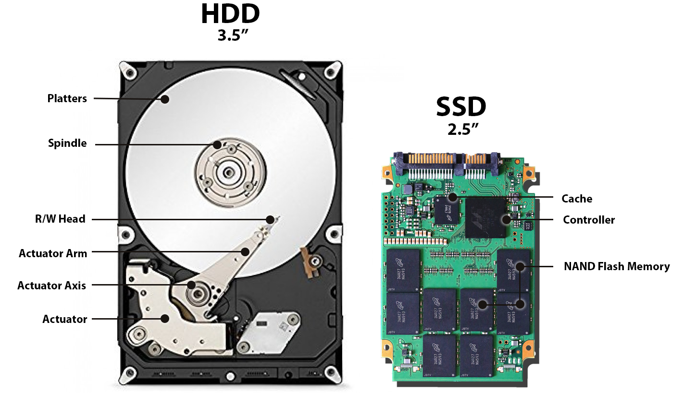

Technology Overview / 技术概述
- Solid state storage (no moving parts) / 固态存储(无移动部件)
- CMOS NAND technology / CMOS NAND技术
- Data stored by controlling electron movement / 通过控制电子移动存储数据
- Non-volatile rewritable memory / 非易失性可重写存储器
Floating Gate & Control Gate Transistors / 浮栅和控制栅晶体管
- Matrix Structure / 矩阵结构: Flash memory uses a matrix / 闪存使用矩阵
- At each intersection: floating gate + control gate transistors / 每个交叉点：浮栅+控制栅晶体管
How Programming Works / 编程工作原理
- Voltage applied to control gate / 电压施加到控制栅
- Electrons attracted from electron source / 电子从电子源被吸引
- Dielectric coating traps electrons in floating gate / 电介质涂层将电子困在浮栅中
- Floating gate charged = bit value 1 / 浮栅充电 = 位值1
- Floating gate uncharged = bit value 0 / 浮栅未充电 = 位值0
- Control over each intersection cell bit value / 控制每个交叉单元的位值
Charge Retention / 电荷保持
- Dielectric coating allows floating gate to retain charge / 电介质涂层使浮栅保持电荷
- Non-volatile memory (data retained without power) / 非易失性存储(断电保留数据)
- Charge can leak after ~12 months / 约12个月后电荷可能泄漏
- Should be used at least once a year / 应至少每年使用一次
Advantages vs HDD / 相比HDD的优势
- More reliable (no moving parts) / 更可靠(无移动部件)
- Considerably lighter / 重量轻得多
- No spin-up time / 无启动时间
- Lower power consumption / 功耗更低
- Run much cooler / 运行温度更低
- Significantly faster data access / 数据访问速度快得多
SSD Endurance / SSD耐久性
- Write Operations Limit / 写入操作限制: Rated at 20 GB write operations per day over 3-year period / 额定每天20GB写入操作, 持续3年
- Cannot overwrite existing data directly / 不能直接覆写现有数据
- Must erase old data first, then write new data / 必须先擦除旧数据,再写入新数据
- Improving Durability / 提高耐久性: Becoming more common in servers and cloud storage / 在服务器和云存储中越来越普遍
